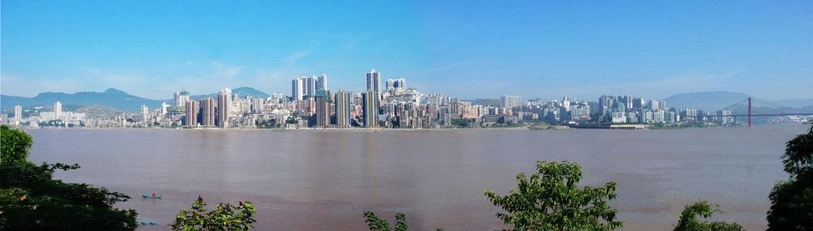

中文名称: |
重庆市忠县 |
邮政编码: |
404300 |
行政区划: |
重庆市 |
地理位置: |
重庆市东北部 |
所属地区: |
渝东北 |
面 积: |
2187平方公里 |
下辖地区: |
东溪镇、汝溪镇、官坝镇等 |
人 口: |
常住人口：71.67万 |
政府驻地: |
忠州街道 |
方 言: |
重庆方言 |
区号: |
023 |
气候: |
亚热带 |
著名景点: |
石宝寨 |
风景名胜
忠县旅游资源有石宝寨、白公祠等景点，政府还举办有中国柑橘文化（旅游）节。 甘井沟 甘井沟位于重庆忠县城西4公里处的黄金镇，是峡谷型自然风景区。由三峡水库蓄水而成。为重庆市级风景名胜区。 中国柑橘城 中国柑橘城位于重庆忠县新立镇，是忠县实施旅游精品战略的重要项目之一，为全国农业旅游示范点。 石宝寨 石宝寨位于重庆忠县城东30公里处的长江北岸，是国家4A级旅游景区、国家重点文物保护单位、“巴渝新十二景”之一。 白公祠 白公祠位于重庆忠州镇城西，始建于明崇祯三年，清道光十年加以扩建，是为纪念忠州刺史、唐代大诗人白居易而建的祠堂（公元 818年白居易任忠州刺史），是与洛阳香山“唐少传白公墓祠”齐名的两座白居易祠之一。 无铭阙—丁房阙 无铭阙是我国仅存的重檐式仿木结构石阙，丁房阙是我国目前已发现的汉阙中最高的双檐汉阙。始建于东汉， 2001年被列为第五批全国文物保护单位，现已迁至白公祠内 天池山 天池山面积808.9公顷， 因地壳运动在山顶形成了两个天然湖泊得名。2008年1月7日，国家 林业局批准设立天池山国家级森林公园。 陆贽墓 陆贽墓封土长15米，宽12.1米，高2米，始修于公元805年，碑刻8通，已佚。 陆贽（754-805），唐代著名政治家、文学家、政论家，曾任宰相，受诬后被贬忠州别驾，卒于任所。
自然资源
忠县探明矿产资源达18种，主要有天然气、岩盐、石灰石等。其中，天然气探明储量500亿立方米；岩盐矿储量4亿吨，且盐层厚度均在60米以上；石灰石储量44亿立方米，氧化钙含量平均达54.4%。植物有718种，隶属161科、427属。其中蕨类植物28种，裸子植物28种，被子植物662种。有珍稀古树30种、1800余株，隶属19科、28属、28种。其中属国家重点保护的珍稀树种8种、550余株，有红豆杉、三尖杉、鹅掌楸、桢楠、水杉、银杏、杜仲、罗汉松。分布野生动物98种，其中有国家保护动物12种，如金猫、云豹、豹 水獭、大灵猫、小灵猫、林麝、毛冠鹿、红腹锦鸡、白腹锦鸡等，另有皮毛动物17种，如狐、獾、野猪、刺猬、豺等；有鸟类40余种。。
民族文化
2010年，忠县常住人口中，汉族人口为743058人，占98.89%；各少数民族人口为8366人，占1.11%。户籍人口中，汉族人口为1002874人，占99.12%；各少数民族人口为8897人，占0.88%。。